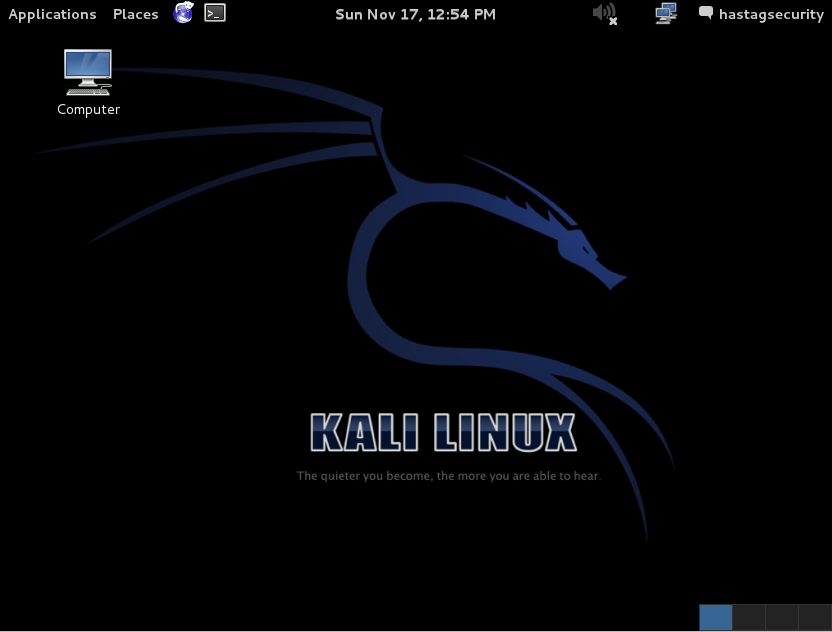
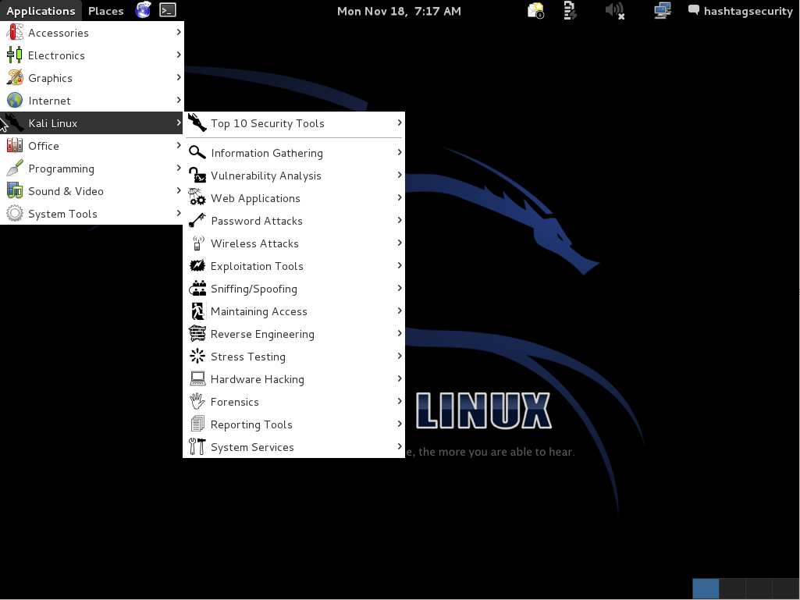
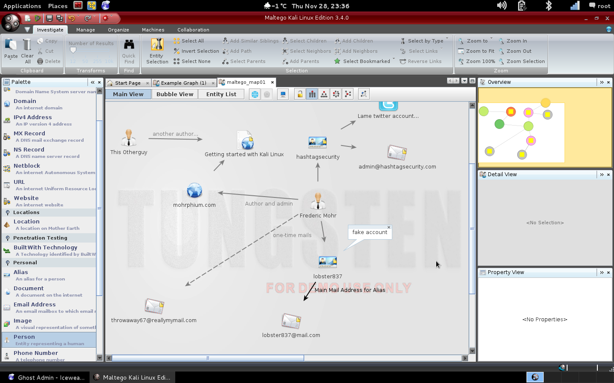

After reviewing the book Instant Kali Linux, I thought why not give it a try and actually do the things better I nagged about. Well, for one thing it's a lot of work and I try not to start projects that are way too demanding and end up never finishing them.
But maybe it's time for just such a project and who knows, maybe I'll even finish it. In any case, you can read along while the book developes and hopefully give some feedback.
Disclaimer: All the information provided on this document is for educational purposes only. The site and it's author is in no way responsible for any misuse of the information.
I will continue writing this book whenever I find time to. This book comes free of charge but without any warranty or promises :).
- Installation Guide
- Getting started with the GUI
- The Bourne Again Shell
- Information Gathering
- To be continued...
It is hard for me to decide how far I should go into detail on a single tool. I try to explain everything, that I think starters should now and add links to further ressources as the book evolves. If you miss any information or want to share a link you think might be of value to the readers, please contact me at admin@mohrphium.com.
Introduction to Kali Linux Back to Index
For those of you that don't know what Linux is, this book might be the wrong source to get started. I'm not saying that you shouldn't read this book, but there are better guides on getting started with Linux. Since I hate it when a book suggests, that I should read another book before I can get started reading about what interests me, I will give a quick introduction to Linux as well.
If you already know how Linux works and spent your fair share of time on a console, you can skip to chapter 5. If you just saw a picture of your favourite gaming console flash before your inner eye, you might want to keep reading.
A Linux distribution such as Debian, is based on the Linux kernel. A distribution is basically a collection of tools that form an OS. Many distros are built for a specific purpose, there are the ones trying to give users the best out-of-the-box experience, the ones that let you do everything manually, the ones that are focused on providing stable packages, or the ones providing the most on the edge, up to date packages, and of course the ones that provide very specific purpose such as distros that are used as firewalls, intrusion detection systems and so on.
Kali is a Linux distribution, but instead of being made from scratch, it is based on the Debian distribution. This allows its maintainers (the guys over at offsec.com) to focus on the huge collection of already installed tools that are useful for penetration testers, exploit developers and almost anyone who's into IT security. Even if you're working as an system administrator, many of these tools can come in handy.
If you need information on Kali Linux and you don't find it here, you should try the official documentation.
Installation Guide Back to Index
So how do you get Kali Linux? First of, you need to download the .iso image from kali.org. Do yourself a favor and download the image via torrent, it's much faster that the regular download.
In this book, I will be working in a Kali Linux VM running in Virtualbox, because it's free, cross platform and has everything we need. If you prefer VMware Workstation or any other virtualisation or even want to install it directly on your hardware go ahead. The later has of course the benefit of having direct access to GPU and CPU, which comes in handy if you want to crack passwords.
I will not go through the process of installing Virtualbox itself, and I won't show a picture for every step.
If you have a second HDD available, (not partition, an internal physical harddrive or esata/USB3) you can put your vms virtual disk on this disk, which improves the overall performance. To do that, go to
Start Virtualbox and click on "New" to create a new virtual machine. Enter a name for your vm and choose Linux as type and "Debian (64 bit)" as version. I personally like to set my vms RAM to 2048MB, but you can work with 1024MB if you don't have enough memory.
Create a new virtual disk and choose the VDI format. I normally use Dynamically allocated, which takes only the space on your disk the vm really needs. If you have enough space you might want to choose Fixed size, which takes longer to create to since it allocates the whole disk size but it's also boosts the vms performance.
The disk should at least have 12GB of space, but I like to create 50GB disks. That way I usually don't run out of space - there is nothing more annoying than running out of disk space while working on something.
When you're done, start the vm. Virtualbox will asked you for a DVD drive or .iso file to boot from since the hdd is still empty. Click on the small folder sign to browse through your file system and select the kali linux image you have downloaded earlier. You should be presented with a boot menu. Select the Graphical Install entry. If you want to leave the window, press the right [CTRL] key on your keyboard.
The graphical installation should be self-explanatory. If you speak english (which you probably do since you're reading this) choose english and en_US.UTF-8 for language and locales. It makes your life a lot easier in my experience.
Wait for the setup to load everything, then choose a hostname for your vm, enter your domain name (if you have one) and set a root password.
Choose the entry "Guided - use entire disk", select the previously created virtual hdd and install "All files in one partition". After that, you'll be shown a summary of your disk partitioning which you can accept by clicking continue. At "Write changes to disk?" select Yes and move on.
Answer the following questions like I did.
"Use a network mirror?" Yes.
"HTTP proxy information" leave blank.
"Install the GRUB bootloader to the master boot record?" Yes.
Wait for Kali to reboot after installation and boot your new OS. Virtualbox will automatically boot from your hdd instead of the .iso.
Notes on VMware Workstation
If you want use the preinstalled image (which isn't available from kali.org anymore) of Kali in VMware Workstation 8 or lower, you need to edit the .vmx and change the following line
virtualHW.version = "9"
to your version of Workstation.
Also, if you use the preinstalled image, make sure you change the default login credentials (root/toor). For those new to linux, if you enter your new password you won't get any visual feedback - the advice is not to put in a blank password!
root@kali:~# passwd root
Enter new UNIX password:
Retype new UNIX password:
passwd: password updated successfully
Install Virtualbox GuestAdditions
The VBox GuestAdditions make your life much easier and therefore should be installed. To do so, login to Kali and open up a terminal by clicking on the black box with the > sign in it on the top bar.
A terminal windows should open, which shows you the following promt.
root@kali:~#
This prompt tells you everything you need to know about your user in the terminal. Root is the user you are executing programs as, @kali indicates the host which you are currently on. This can change if you connect to other hosts, for example using ssh. After : comes the path of your current location, where ~ stand for your home folder. The root user has it's home in /root/, other users normally have their home folders in /home/username/. Lastly, # indicates that you are an administrative user, otherwise there would be a $ instead.
No that you know what the prompt means, enter the following commands to install the Virtualbox GuestAdditions.
root@kali:~# apt-get install virtualbox-guest-additions virtualbox-guest-dkms -y
root@kali:~# reboot
From now on, whenever you see a prompt like this you are expected to run a command on the terminal in the context of the specified user.
Configuring and updating the system
A lot of tools in Kali need root permissions, which is the ultimate system administrator. Root is allowed to do everything on your Linux machine, which is why you shouldn't run everything as root. I always create a normal user in Kali, in this case called hashtagsecurity. This allowes me to run programs like firefox or chrome as normal user.
root@kali:~# adduser hashtagsecurity
You don't have to fill out the information, but make sure to set a password.
Now logout (click root in the upper right corner) and login as your newly created user.
To run commands as root, you can either open a terminal and enter
su
Which will ask you for your root password, or open the root terminal at "Applications -> Accessories -> Root Terminal (Red Logo)".
Last but not least, you need to update Kali. This is something you should regularly do, so you don't miss new features.
root@kali:~# apt-get update
root@kali:~# apt-get upgrade
Apt-get is the package manager used to install, search, remove and upgrade packages. With apt-get update you can check for new updates and with apt-get upgrade you can install them.
Getting started with the GUI Back to Index
By default, the graphical user interface should look like this.

If you have installed the GuestAdditions you can jump into fullscreen mode by pressing the right [CTRL]+[F] keys.
Unlike Windows, Kali Linux has two systembars. The one on the bottom contains open programs and the switcher applet in the right corner to change between multiple virtual desktops. At the topbar you can see from left to right the Applications and Places menus, as well as a few shortcuts to iceweasel (firefox), the commandline, a calendar widget, sound options, remote connections (RDP) and user settings.
If you want to change system settings take a look at places, otherwise we will focus on the Applications menu, specifically the Kali Linux submenu, which provides us with most of the on board security tools sorted in categories.

Among a few others, the categories listed in this menu entry will also be the topics of the coming chapters.
Menu overview and standard tools
Here is a quick introduction to the most tools you can find in the menu outside the "Kali Linux" submenu.
One important thing about Kali is, that you can open any program with [ALT]+[F2], if you know its name. So if you already know what program to run, don't bother clicking through the menu.
Chat:
Applications -> Internet -> Empathy
Empathy is a chat program that supports the following protocols
Jabber, Facebook, Google, AIM, gadugadu, GroupWise, ICQ, IRC, MSN, mxit, myspace, sametime, Yahoo, zephyr
Browser:
Applications -> Internet -> Iceweasel
Iceweasel, the Debian version of Firefox is installed by default. If you need Chromium (the Linux version of Google Chrome), you can install it with
root@kali:~# apt-get install chromium-browser
and start it from Applications -> Internet -> Chromium.
Note that Chromium will not run under root unless you change some bytes in the executable binary. It's easier to use a normal user for everyday tasks and a root shell for those who need administrative privileges.
Documentation:
Applications -> Accessories -> Zim Desktop Wiki
There are different ways to keep notes and document your process while working in Kali. My personal favourite is Zim Desktop Wiki, which with I do all my documentation. It is, as the name suggests, a typical wiki with markup functionality only that it runs as a desktop application.
I won't go into detail about Zim, because it's pretty self-explanatory.
Other tools on board are the notebook KeepNote, as well as the typical text editors like LeafPad and GVIM. A sidenote on the later - if you don't know VIM, which is the same as GVIM but for commandline (cli), you should absolutely try it!
Applications -> Office -> KeepNote
Applications -> Accessories -> LeafPad
Applications -> Accessories -> GVim
VIM works very differently than your normal editor but it's a very powerful cli editor. What you should know is that VIM operates in modes. You can leave any mode with the [ESC] key and enter them with their shortcuts. In [v]isual mode you can select text, which can than be used in VIM commands. The most important mode is [i]nsert, which lets you insert and edit text.
Here is a list of the most important VIM commands (leave any modes first with [ESC])
To save the file enter
:w
To quit enter
:q
To quit without saving
:q!
To quit with saving
:wq
To save and force overwrite
:w!
Search in file
/searchterm
Search and replace all
:%s/search/replace/g
VIM has a lot of features (just search for VIM cheatsheets), but this should help you get started. It is important to know how to work with a commandline editor if you don't wanna be stuck at some point. Many servers don't have a graphical interfaces installed, which leaves you only with commandline tools.
If you need a plain PDF reader, Evince is already installed.
Applications -> Office -> Document Viewer
Programing:
There are a few tools for programmers already installed. If you want to quickly write a script or small program in python, this will probably help you.
Under Applications -> Programming, you can see the tools PyCrust, XRCED, GRC and the ArduinoIDE.
PyCrust is an interactive python shell, and not an IDE. It is good to try out python snippets, but if you want to program in python you should try PyAlaMode which you can start from the commandline or [ALT]+[F2] by running pyalamode. If you want to create a GUI for your python program, you can use XRCed, which is a GUI editor for wxPython GUI design. XRCed uses XRC, which is a XML-based interface markup language used by wxWidgets.
The ArduinoIDE is the integrated development environment (IDE) for the Arduino hardware board.
GRC is the GNU Radio Companion, and a graphical user interface to develop GNU Radio applications. GNU Radio is a software library that you can use to develop complete applications for radio engineering and signal processing.
Next up
That ends our quick tour through the main menu and the standard tools you might use. Let's get familiar with the commandline, which in this case is the Bourne Again Shell (bash). Once you know your way around the bash, we will get started on the differen tools Kali has to offer.
But first, since you will be needing terminals a lot it's best to keep a shortcut in the upper system bar of both, the normal and the root terminal. A shortcut of the default terminal should already be in the bar. To get the root terminal there as well, browse to Applications -> Accessories and drag/drop the entry "Root Terminal" with the red terminal icon to the bar.
To delete or edit a shortcut icon, you have to press [Super]+[ALT]+[RMB]. This brings up the context menu from which you can choose “edit” or “delete. This combination also works on the top and bottom panels. (If you have problems, try [Alt]+[RMB] instead.)
To make things clear, in Linux the "Super" Key is the one with the Windows logo. And just in case you don't know, RMB = Right Mouse Button.
Working with a terminal Back to Index
There are many shells you can choose from and as for so many things in Linux, the choice is completely yours. The Bourne Again Shell, or bash for short is the default shell in Debian and Kali Linux. I won't go into the history but will go directly into how to work with it. If you want to read up on it, take a look at the wikipedia article.
During the Installation Guide, we already used the terminal and thus the bash. The bash is located at /usr/bin/bash, which is a path in the filesystem. If you come from Windows, some of this stuff may be new to you, so here's a short introduction.
Filesystems work different in Linux
Windows uses file paths like C:\Programs\Company\AwesomeTool\awesometool.exe, while Linux uses
/usr/bin/bash.
In Windows, executable files are usually marked as .exe files. In Linux you can execute any file if it has the executive bit set. Therefore, you don't necessarely need a file ending. You could rename the bash executable to bash.linux or even bash.windows and you would still be able to start it - though it would mess up your system if bash can't be found.
The biggest differences for newcomers are that Linux uses / instead of \ in file paths and that there are no drive letters like C:\ or D:\.
Drives are mounted to file paths, which means that you open drives just like you open any folder. The C:\ drive is equal to / which is also known as the root directoy. The root directory is, as the name suggests the root of all paths and the highest object in file path hierarchy. Don't get confused by /root/, which is the home folder for the user "root.
The root user is the most powerfull administrative user Linux has to offer, so executing commands as root should always go hand in hand with the "think before fire" rule.
A nice example for this is the ever so famous rm -rf /* command, which deletes every file on your harddrive and leaves you with an system that defines the word "destroyed".
The rm, or remove command is used to delete files, the -rf switches stand for recursive and force, which tells rm to delete files as well as folders that hold further files or folders. The last part /* states, that rm should delete every (*) file/folder in the root directory. As you can see, using root to execute commands can be the last command you execute on this system. That is why you have to make sure you understand every command you enter (especially when it comes to copy/paste commands someone posted in the web).
Further partitions are usually mounted in the /media/ folder. The drives are listed under /dev/sdXY, where /dev/ is the path containing all devices, sd equals sata drive, X stands for the drive identifier (a-z) and Y is the partition number. So your system partition is usually /dev/sda1, sda being the disk and sda1 the first partition on it. These are just mappings though, the real identifier (if you ever have problems) can be found by entering the following command:
ls -lah /dev/disk/by-uuid/
This command lists (ls -lah) the mapping of /dev/sdXY to the disk UUID (Universal unique identifier).
If you need more information about your harddrive, try
fdisk -l or fdisk -l /dev/sdXY
This gives you more information about all or a specified drive. -l stands for list, so you can't break anything with this command (it still needs root though), but be careful with fdisk. It is used to format and partition disks (among other functions).
If you use fdisk -l, you might notice that your system partition is not NTFS but most likely Ext3. Ext is a Linux filesystem, (yes a, not the - there are many). Once again, you have the choice which Filesystem you want to use, but this is way out of the scope of this book. The only thing you need to know right now is that FAT16/FAT32 (used by USB thumbdrives) and NTFS (used by Windows) is supported by Linux, Ext filesystems however are not supported by Windows. So when using Linux you can move files between your Windows and Linux partitions, but not when your running Windows.
What is FHS and how does it help me?
Now that you know a bit more about the Linux filesystem and how drives are handled, there is one more thing you might wanna know. Before Kali was released, the distribution was known under the name BackTrack. It included all the great tools hackers and security experts needed to do their thing, but there was the problem of keeping these tools sorted.
If a new tool was added, there was the question in which folder this tool shoud go and the different categories where located in the /pentest/ folder.
With Kali Linux, the guys at Offsec decided to switch to FHS, which stands for File Hierarchy Standard and represents a definition, where tools should be located. For people that where used to the /pentest/ folder, this was a bit uncomfortable, since you can't just browse through the folder anymore to find cool new tools.
The benefit of working with FHS however, is that you can call any tools from any location in the terminal. Before you had to be in the folder of e.g. the web scanner Nikto, to be able to start Nikto. Now you can fire it up no matter where you currently are.
If you need a source to browse through all the tools offered by Kali (the menu has only a small percentage of the tools that are available), try this.
dpkg -l |grep -v "firmware\|ii lib\|ii gir1\|ii gnome-\|ii python\|ii xserver-xorg-\|ii x11\|ii xserver\|ii ruby"|grep "^ii"
Tweaking the bash with .bashrc
If you don't want to type all that every time you need a list, either add > myprogramlist to the end, to save it in the file myprogramlist or add the following string to the alias section in the file ~/.bashrc. (It's one line!)
alias listapps='dpkg -l |grep -v "firmware\|ii lib\|ii gir1\|ii gnome-\|ii python\|ii xserver-xorg-\|ii x11\|ii xserver\|ii ruby"|grep "^ii"'
Speaking of ~/.bashrc, there are two things in this file path we haven't discussed yet. The ~ which stands for your home directory, so /home/hashtagsecurity/ in my case, or /root/ if you work as root user (it's best to edit both files by the way) and the dot in front of .bashrc. The dot is the universal sign that the file is normaly a hidden file, so you won't see it if you type ls (list) in your terminal. Fortunately ls has a few options, like
ls -1 which lists every item in a new line (good for scripts),
ls -lh where the additional l gives you more information and the h makes sure it is in a human readable output (so filesizes in KB or MB instead ob bytes) and of course (among many more)
ls -a which show you all files as long as you have sufficient permissions to see them. These options can be combined to your liking, for example
ls -lhatr gives you all files (a) with additional information (l) in a human readable form (h), sorted by timestamp (t) but reverse (r), so that the newest file is listed on the bottom.
As with the listapps alias, you can define your own aliases to make your life easier, e.g. alias la='ls -lhatr'.
Then you only have to type la instead of ls -lhatr to get all the above mentioned function. There is always a shortcut in Linux.
To load changes made to ~/.bashrc either close and reopen your terminal, or simply enter source ~/.bashrc to reload it.
Introducing: manpages and --help
Now that you have seen, how commands work in general - command -switch, we should take the help switch and manpages. The help switch is mostly --help, -h or sometimes -?. If that doesn't work, try them without the dashes. It usually gives you a quick overview on what the program does and what it's main switches are. If you need more information, you should use the man command, which stands for manual. A good example is the mount command.
Take a look at the different output between
mount -h
and man mount.
The later opens the manual in a commandline text viewe. Normally it uses less, which you can try yourself by typing less and-a-text-file-of-your-choice
To exit less, or the manpages just enter q, to search in them enter /searchterm.
Using apt-get to manage software packages
Last but not least, we'll quickly go over the package manager apt-get. There are two package managers already on board (besides dpkg), one is apt-get and the other is aptitude. In this book we will use apt-get since it is the one used in most tutorials.
Linux doesn't work with .exe files, since those are built for Windows. If you have a linux binary you want to run, you have to make it executable first.
You can to this by adding the executable bit (as root) with chmod +x file.bin
After that you can start it with ./file.bin. Note that the . is in front of the / this time, which stands for the folder you are currently in. Alternatively you could specify the whole path, e.g. /full/path/to/your/file.bin
This however, only works if all the ressources the binary depends on are either already installed or included in the file. If you want to install a new program, it's always better to check the repositories first.
First, you have to check the repository for updates. This will all available information about packages.
apt-get update
The you can upgrade the whole system (all packages) or a single program with either
apt-get upgrade or apt-get upgrade programname
If you don't know the exact name of the programs package, you can search for it with
apt-cache search programname
or display information about an package, for example the VLC media player, with
apt-cache showpkg vlc
This wraps up the introduction to Linux and Kali basics. In the next chapters, we will take a look at the tools Kali has to offer and their different features.
The following chapters are divided into the same categories, as the tools in Kalis menu. However, I will not use the same order as the menu does, nor will I go into detail on every single tool of the categories. I will try to explain tools along the flow of a possible workflow, meaning I won't start with someting like maintaining access, but rather information gathering and documentation. This way, readers without experience should be able to work through the book without having to jump between chapters.
Information Gathering Back to Index
Before you can start attacking, you need to gather information and before that you need a target. You target can be a host, a website, a person or company and much more.
The most important thing is that you have a written permission of the targets owner. Never attack or scan a host or website or any other ressource without having a permission to do so. If you do otherwise, you are breaking the law.
Also note, that some countries have special rules about attacking and scanning host with or without permission in some it's even illegal to download or posess tools that are inteded for these purposes (e.g. most of Kalis tools). This book is no legal guide, so make sure to read up on the laws of your country or the country you are in when performing these actions.
You also need to make sure, that you are allowed to scan or attack your own servers. Some hosters don't allow scanning from, or servers in their network and it is possible that you violate your agreement.
Once you have your target, you can apply different techniques of information gathering. If it's a person, you can try to find out the following information.
- Email addresses - most people have more than one. Try private and business mails.
- Profiles in social networks like Facebook, Google Plus, Xing, LinkedIn, MySpace, YouTube, Discussion boards, Q&A sites, etc.
- Real Name, Job, Company, Aliases or Chatprofiles
- Try to find out who are his colleagues, friends, family member, etc. Maybe you can use them to your advantage.
- Anything that might be interesting
If you found an email address, search for it. It's not uncommon for people to mix their personas on the web. You might find some accounts mapped to that mail address and if you search for these accounts you might find new mail addresses.
To do all that, you don't need Kali. You just need a browser and an internet connection. But Kali can still help you and make things easier.
To keep track of all that information, you can use Maltego. Maltego is a tool to create maps of related information. If you search for a person, you create an entry for that person and link every information you find to it. This way you create a network map of all the information you find, which helps you to keep track of your progress and find new connections.
Maltego
To start Maltego, hit [ALT]+[F2], type maltego and click on Run. This is the Maltego Community Edition, which is intended for non-commercial use only. Head over to [www.paterva.com](http://www.paterva.com) for a full license and a lot of documentation.Once you have started Maltego you will be greeted by a wizard and a login page. There is a register link where you can setup an account. Just click through the wizard and select the example page when you come to the end. This gives you an example of how a map could look like and also a nice set of entities you can use to create your own map. Hit [CTRL]+[T], or click on the sign in the upper left corner and then on New, to create a blank page.
Start dragging entities into your map and open them with a double click to fill in the information you've gathered. You can select them with a single click and than drag them around, or when deselected, you can create links between entities.

To be continued...

"Getting Started with Kali Linux" is licensed under a Creative Commons Attribution-ShareAlike 4.0 International License.
Time to give something back :)